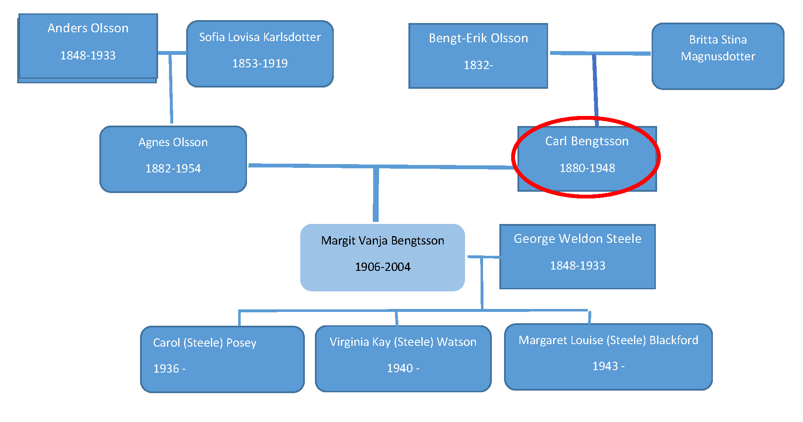
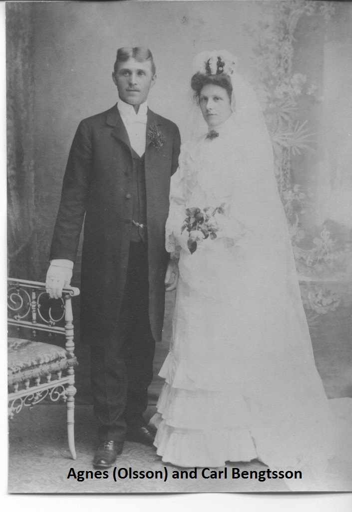
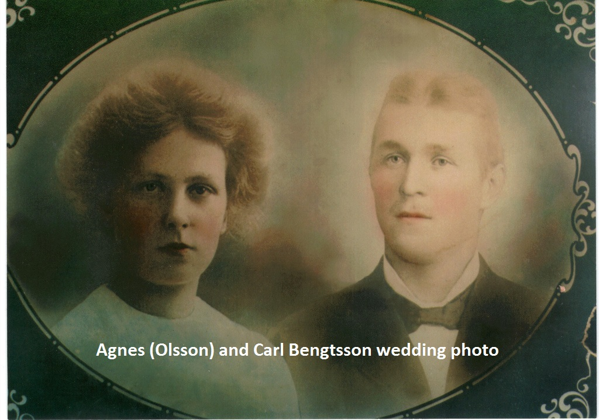
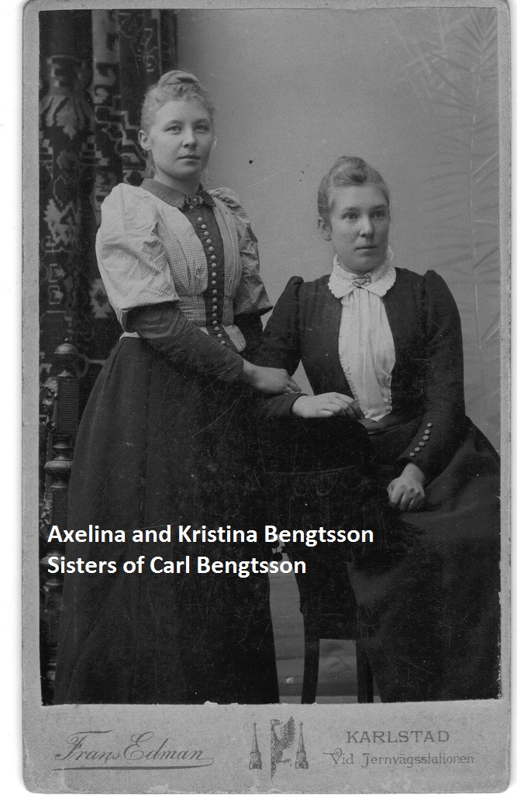
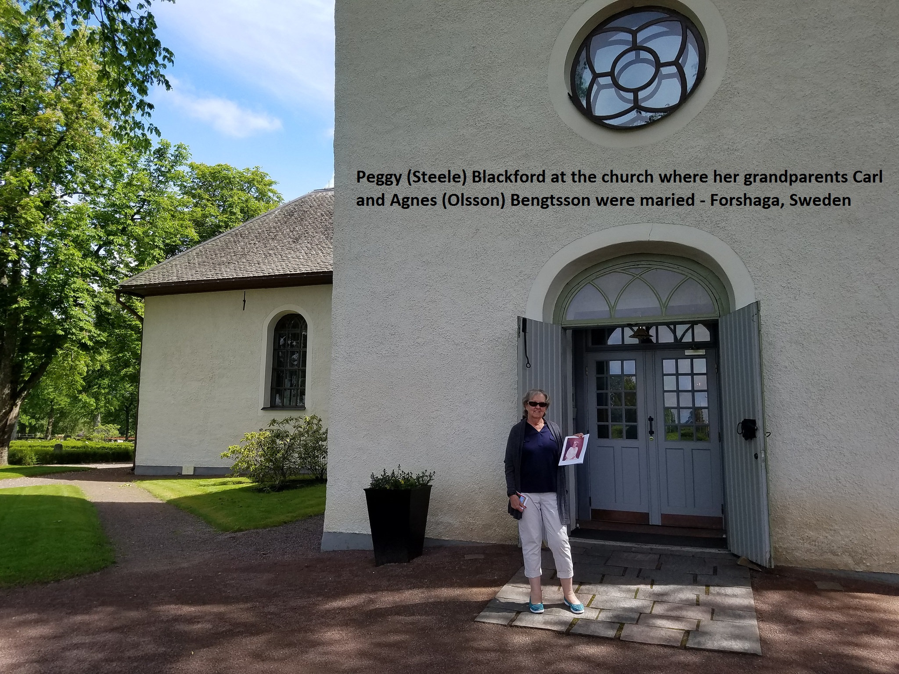
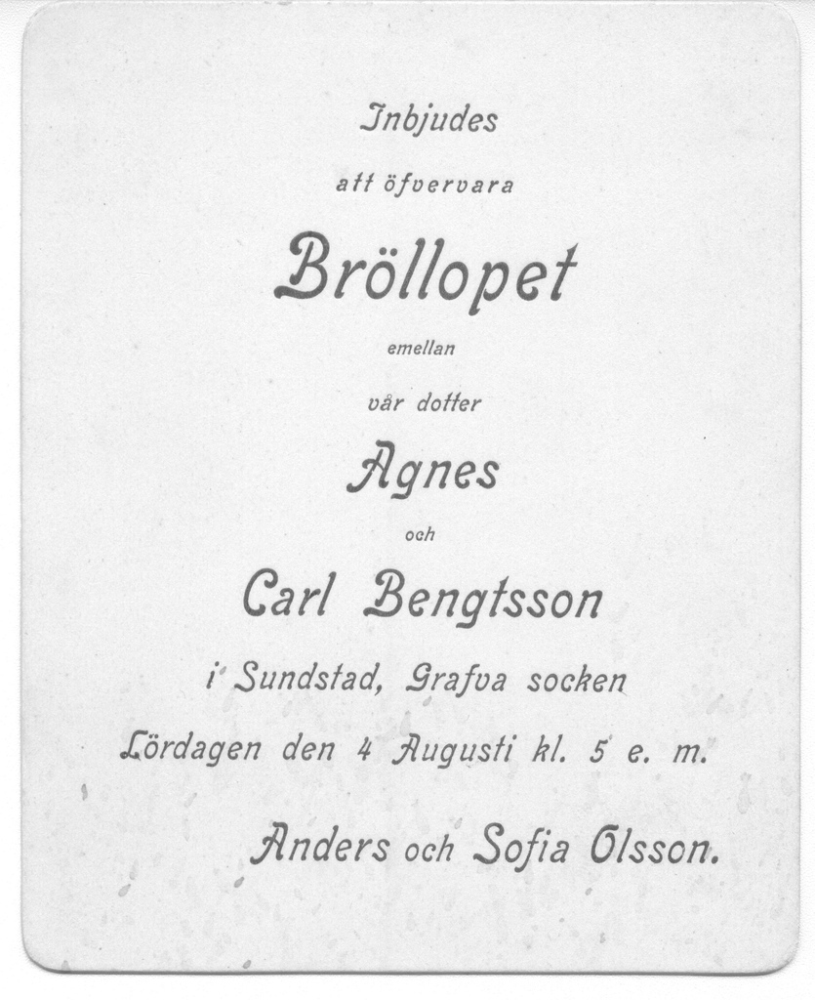

Carl Bengtsson
Siblings:
- Kristina Lovisa Olsson 1869-
- Axelina Olsson 1872-
- Elizabeth Olsson 1873-1882 (9)
- Johan Magnus 1875-
- Adolf Olsson 1877-1879 (2)
- Emanuel 1881-1881 (<1)
Carl, on his trips back to Sweden, had another son, Nils Carlson
Children:
- Margit Vanja Bengtsson
- Francis Hedvig Benson 1907-2001
- Eric Birger Benson 1909-1953
- Florence Sigrid Benson 1912-1934
- Holger Carl Benson 1913-1979
- Henry Albert Benson 1917-1973
- Harold Ejnar Benson 1917-1973
- Robert Philip Benson 1919 - 2016
- Lillian Isabelle Benson 1922 - 2009





